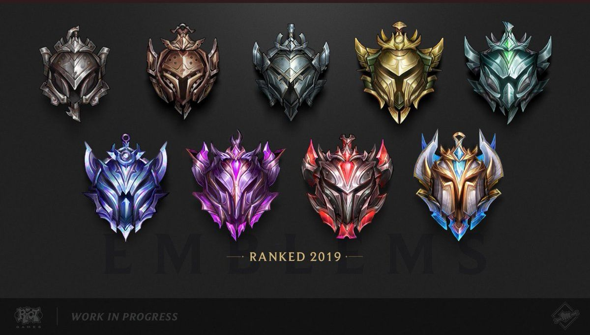

크게 일반게임, 랭크게임으로 나뉘며 게임방식은 동일하나 랭크게임의 경우 게임 시작시 로비에서 5개의 챔피언을 금지하는 밴카드를 사용 챔피언를 금지시켜 상대하기싫은 챔피언을 게임에서 제외시킬수 있고 서로 중복되지 않는 챔피언만을 고를수있다
일반게임
기본적으로 빠른 대전 게임(비공개 선택)은 유저 10명이 5 vs 5로 팀을 나눠서 진행된다. 포지션 설정없이 진행되기 때문에 원하는 라인(포지션)에 가려면 순발력이 어느정도 필요하다.
랭크게임

유저들의 티어(계급) 변동에 영향을 주는 게임으로, 2018 시즌까지는 브론즈/실버/골드/플래티넘/다이아몬드/마스터/챌린저의 티어가 있었고 브론즈부터 다이아몬드 티어까지는 각각의 티어를 세분화한 단계가 1단계(가장 상위)부터 5단계(가장 하위)까지 있었다. 2019 시즌부터는 아이언/브론즈/실버/골드/플래티넘/다이아몬드/마스터/그랜드마스터/챌린저로 구분되며, 아이언부터 다이아몬드 티어까지의 단계 구분이 4단계로 줄어들었다. 랭크 게임 플레이 조건은 30레벨 이상이고, 자신이 직접 소유한 챔피언 20개 이상이다.